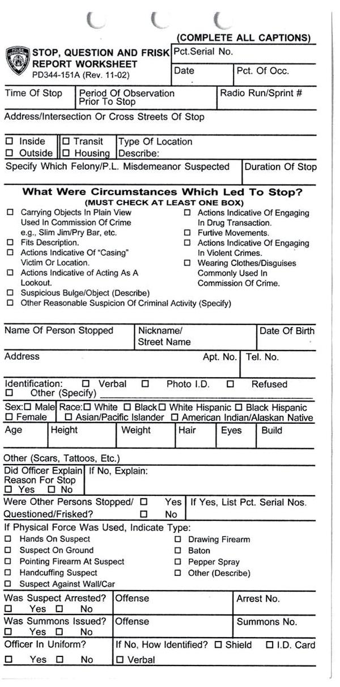

An Analysis of the New York City Police Department’s “Stop-and-Frisk” Policy in the Context of Claims of Racial Bias
- Andrew Gelman, Jeffrey Fagan & Alex Kiss (2007)
Paper Presentation
Statistics Comprehensive
Question : Bias in police stops?
Concerns:
-
In the late 1990s, concerns were raised across US about police harassment of minority groups.
-
Allegedly, police were stopping people on the highways for driving while black.
-
Racial bias in pedestrian stops of citizens in the name of zero-tolerance policies to control quality-of-life crimes.
These practices prompted angry reactions among minority citizens.
Why NYPD?
New York City’s policing strategy, during the 1990s, involved aggressive stops and searches of pedestrians for a wide range of crimes.
“Temporarily detaining, questioning, and, at times, searching civilians on the street”.
The strategy, known as New York Strategy, is credited as a major source of the city’s sharp crime decline.
Why NYPD?
But, there were complaints of harassment of minority communities, especially by the Street Crimes Unit.
Events such as,
-
Well-publicized assault by police of Abner Louima
-
Shootings of Amadou Diallo and Patrick Dorismond
Aggressive “stop and frisk” tactics ultimately provoked racial bias in the patterns of “stop and frisk”.
Were the police disproportionately stopping ethnic minorities?
- Analyze the rates at which New Yorkers of different ethnic groups were stopped by the police on city streets.
Outline:
-
Background
-
Data collection
-
Summary Statistics
-
Models
-
Conclusion
Background : Race, Neighbourhoods, and Police Stops
-
Historically, close surveillance by police has been a part of everyday life for African-Americans.
-
In 1996, court allowed the use of race as a basis for a police stop as long as there were other factors.
-
The legal standard for police conduct sets some parameters for “reasonable suspicion”.
-
Recently, the courts have expanded the concept of “reasonable suspicion” to include location as well as behaviour.
-
Two nationwide surveys ('99 & '02) showed that African-Americans were far more likely than others to report being stopped on the highways.
-
Minority drivers also were more likely to report being ticketed, arrested, handcuffed, or searched.
-
In 2001, a study showed that of the drivers on I-95 in Maryland stopped on suspicion of drug trafficking, African-Americans were as likely as whites to have drugs in their cars.
Police have defended these claims on the grounds that,
-
“High-crime areas” often have high concentrations of minority citizens.
-
Minorities commit disproportionately more crimes than whites & hence, more aggressive enforcement in minority communities is justified.
-
Higher stop rates of minorities simply represent reasonable and efficient police practice.
Data Collection
UF-250 Form : Keeping records on stops

Data Collection
Information was collated for all stops from January 1998 through March 1999.
About 175,000 stops were recorded in that period.
The police are not required to fill out a form for every stop.
-
$72\%$ mandated cases
-
$28\%$ non-mandated (reporting was optional)
The form has one field: “Factors which caused officer to reasonably suspect person stopped (include information from third persons and their identity, if known).”
These forms and the reasons for the stops were examined for a citywide sample of 5,000 cases, along with 10,869 others, representing 50% of the cases in a nonrandom sample of 8 of the 75 police precincts.
Data Collection : Examples
Here are some examples that motivated police decisions to stop suspects:
“At TPO male was with person who fit description of person wanted for GLA [grand larceny auto] in 072 pct. log . . . upon approach male discarded small coin roller which contained 5 bags of alleged crack.”
“Did have on a large bubble coat with a bulge in right pocket.”
“Person stopped did stop walking and reverse direction upon seeing police. Attempted to enter store as police approached; Frisked for safety.”
The New York State Attorney General’s office used some rules to characterize the rationales of the stops.
-
Reasonable suspicion : $61\%$ (1 in 7 led to arrest)
-
Not reasonable : $15\%$ (1 in 29 led to arrest)
-
Insufficient information : $24\%$
For Street Crimes Unit, 23% of stops were judged to not have a reasonable suspicion.
There was no strong pattern by ethnicity here. The rate of unreasonable stops was about the same for all ethnic groups.
Classification:
The following groups were considered:
-
Blacks / African-Americans ($51\%$ stops) ($26\%$ of city population)
-
Hispanics / Latinos ($33\%$ stops) ($24\%$ of city population)
-
Whites / European-Americans ($12\%$ stops) ($43\%$ of city population)
Others represented only $4\%$ of stops, and excluded.
4 types of crimes were considered:
-
Violent crimes ($25\%$ stops)
-
Weapons offenses ($24\%$ stops)
-
Property crimes ($20\%$ stops)
-
Drug crimes ($11\%$ stops)
Rates of Stops for Each Ethnic Group

____ Blacks, ---- Hispanics, .... Whites